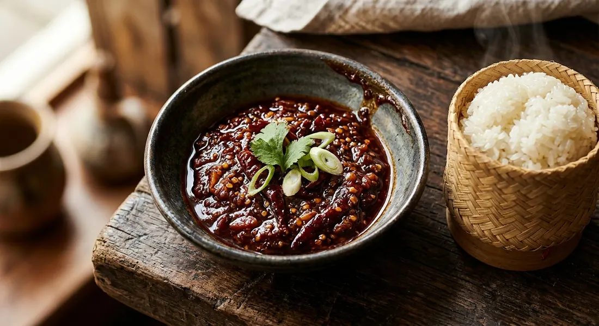

Dried chillies, galangal, shallots and garlic — roasted, pounded and fried to a glossy, smoky-sweet paste, with shredded buffalo skin for chew.

แจ่ว (jeow) is the Lao-Isaan word for any pounded dipping relish; บอง (bong) points at the dried chilli and galangal paste at its centre. Thai Wikipedia pins it down: a spicy-sweet chilli sauce from Laos and Thailand's Isaan, built on chillies and ข่า (galangal) with whatever herbs grow nearby — and, in many recipes, dried buffalo skin, which rehydrates in the paste into soft, chewy, collagen-rich shreds.
It is the condiment of Luang Prabang, where the Lao food writer Phia Sing recorded the court and household tradition in Traditional Recipes of Laos, and it travels with sticky rice: a dab pressed into a ball of ข้าวเหนียว, a swipe onto raw or steamed vegetables, a spoonful over grilled meat, or as the dip for ไคแผ่น (kai paen), the fried riverweed snack that Wikipedia names as jeow bong's classic partner. The Thai source Wongnai puts it even more plainly — เอาข้าวเหนียวมาจ้ำกับปลาร้านัว ๆ: sticky rice dipped in the fishy, funky paste until the pot is empty.
And it keeps. Wikipedia notes jeow bong stores for a long time without spoiling — the oil, the sugar and the frying are preservatives as much as flavour. A jar lives in the cupboard for months, which is exactly why every household, stall and restaurant along the Mekong keeps one.
| Thai | English | Amount |
|---|---|---|
| พริกแห้ง | Dried large red chillies | 40 g |
| กระเทียม | Garlic cloves | 10 |
| หอมแดง | Shallots | 6 |
| ข่า | Galangal, thinly sliced | 25 g |
| ตะไคร้ | Lemongrass, tender inner part | 2 stalks |
| ใบมะกรูด | Kaffir lime leaves, shredded | 4 |
| น้ำมัน | Neutral oil | 60 ml |
| ปลาร้า / ปาแดก | Padaek (Lao fermented fish sauce) | 45 ml |
| น้ำปลา | Fish sauce | 30 ml |
| น้ำตาลปี๊บ | Palm sugar | 45 g |
| มะขามเปียก | Tamarind paste | 20 g |
| หนังควาย | Dried buffalo skin, finely shredded | 35 g |
The Isaan pot (Wongnai): 200 g ปลาร้า boiled and chopped fine, 50 g lemongrass, 30 g shallots, 30 g garlic, 30 g galangal and 2 cups of dried chillies — the aromatics dry-roasted (คั่ว) first, everything pounded together and seasoned with a spoon each of น้ำปลาร้า, sugar and tamarind water. No skin, no oil fry: the Isaan home version is a leaner, fishier paste. The southern Lao family pot (Crafts to Crumbs): 200 g galangal, 200 g garlic and 250 g shallots deep-fried golden separately, 50 g dried chillies fried 30 seconds, beef jerky fried briefly, all processed with 2 tbsp fish sauce, 2½ tbsp sugar, salt and MSG. The charred pot (My Cooking Calendar): shallots, garlic and galangal blackened over flame, 30 g ground dried pork skin (แคบหมู) pounded in, then the paste fried 5–8 minutes.
One name, two pastes. Wongnai's แจ่วบอง is essentially ปลาร้าบอง — boiled fermented fish pounded with roasted aromatics, no skin, no fry. Thai Wikipedia's แจ่วบอง is the Lao chilli paste: galangal-forward, fried to a jam, buffalo skin included. The two are relatives that share a name; the Lao version is the one that travelled, and the one this page centres on.
The skin. Dried buffalo skin is the defining texture in Wikipedia's and Zaffaron's versions, and The Food Dictator calls it "the distinguishing ingredient". Crafts to Crumbs uses beef jerky or cow hide. My Cooking Calendar grinds in dried pork skin (แคบหมู). Wongnai's Isaan version uses none. All agree on the function: something dried, meaty and chewy to carry the oil.
Fried or roasted. The Lao family method (Crafts to Crumbs) deep-fries each aromatic — garlic, galangal, shallots — until golden, then fries the chillies 30 seconds. Zaffaron and The Food Dictator dry-roast instead, and The Food Dictator is explicit about preferring fire-roasting over frying. The char-and-broil camp (My Cooking Calendar) blackens the aromatics whole. Same ingredients, three different smokes.
The fermented fish. Zaffaron and The Food Dictator use padaek, the chunky Lao fermented fish sauce; Wongnai boils whole ปลาร้า and seasons with its liquid; Crafts to Crumbs skips fermented fish entirely — fish sauce and sugar only. The funk level is a household dial, not a rule.
Tamarind. Zaffaron and The Food Dictator add tamarind (paste or water) and The Food Dictator adds lime as well. Wongnai adds tamarind water. Crafts to Crumbs and My Cooking Calendar add neither — their jeow bong leans on sugar for the sweet-sour balance.
Sweet or hot. The Food Dictator: jeow bong "can be either on the spicier or sweeter side, depending who makes it". Zaffaron's 45 g palm sugar against 48 g chillies splits the difference; Crafts to Crumbs' 2½ tbsp granulated sugar swings sweet. Thai Wikipedia's one-line definition — เผ็ด หวาน, hot and sweet — leaves the ratio to the cook.
This recipe is translated and adapted from the following Thai, Lao and English-language sources. Where they disagree, we've said so.
1. Wongnai — "วิธีทำ แจ่วบอง เมนูอาหารอีสานรสเด็ด" (the Isaan ปลาร้า version) — wongnai.com
2. Thai Wikipedia — "แจ่วบอง" (definition, origin and buffalo skin) — th.wikipedia.org
3. Zaffaron Kitchen — "Jeow Bong Lao Chili Paste Relish" (the Luang Prabang recipe used here) — zaffaron.com
4. Crafts to Crumbs — "Jeow Bong" (southern Lao family version, deep-fried aromatics) — craftstocrumbs.com
5. The Food Dictator — "The Hirshon Lao Chili Condiment ແຈ່ວບອງ" (fire-roast method, jerky substitute) — thefooddictator.com
6. My Cooking Calendar — "Jeow Bong (Lao Chili Jam Relish)" (charred-aromatic version with pork skin) — mycookingcalendar.com